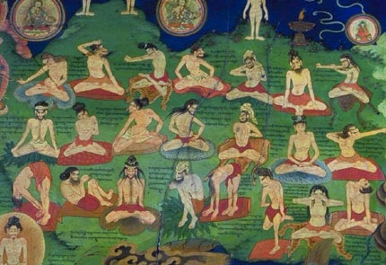

Welcome to Nadiya's page about Yoga

Yoga dates back to Northern India about 5,000 years ago. The first searly writings on Yoga were written on fragile palm leaves. Just as a sacred text, the practice was defined by a group of mystic seers called the Brahmans and Rishis. The idea behind yoga for them was through scriptures of the teaching of ritual sacrifice. Not any physical entity but the sacrifice of the ego(self) through meditation, action and wisdom. This was taught as a means of reaching enlightenment, or what is now thought of as Nirvana.
A few centuries after, yoga masters then created an actual system of practices for rejuvenating the body, more closely to the yoga we know today. The Tantra practice was developed in a way to cleanse the body and mind. This exploration of these physical-spiritual connections and body centered practices led to the creation of what we primarily think of yoga in the West.

Yoga masters travelled West beginning in the late 1800s. The first seed that was planted is said to actually be at the Parliament of Religions in Chicago. The first yoga studio was opened in Hollywood in 1947 teaching a form of Yoga called Hatha Yoga. Since then, styles and schools have been created in the West making modern yoga what it is today in the West.
this the first one
this the 2nd
thrid
4
yerrrr
sixk
sem
last one